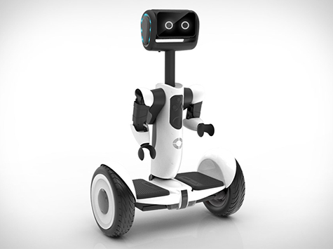

SEGWAY : GENERAL ROBOTICS
Have you ever wished to see a cycle being balanced on its own, riding around all by itself? Even more, Have you ever wondered how automation can transform our lives for the better ? If your answers are yes, then here's the greatest opportunity for you!
R2D2 : VOICE CONTROLLED ROBOTICS
Bosses order workers in factories. Teachers shout at students to get things done. What if you could command a being? Have you ever thought of controlling a robot with just your voice? Well, guess what!
STOCK PREDICTION USING MACHINE LEARNING
Machine learning is no longer the future. It is present in almost every field today, or rather every field involves an aspect of data analytics and machine learning. With data analysts becoming more and more sought after, here's your chance to pick up the skills necessary to become one. Sensors NIT Trichy presents a workshop on Stock Prediction using ML, which will not only help you learn the basics of machine learning, but will also introduce you to the vast applications of data science and take you through a experience of how the stock market functions.
CHROME DINO: COMPUTER VISION BASED CONTROL
The graphics and the physics of PC games may change, but the way we play them has always been a constantum. Have you imagined yourself playing games through gestures rather than just keyboard and joysticks? Stop experiencing and start experimenting, as this is your chance to learn to control using your hand gestures tracked via webcam which involves Computer Vision.

FL-APP-Y BIRD : ANDROID APP DEVELOPMENT
Have you ever wondered how casual addictive games that work with nothing more than a tap are developed? In this one-of-a-kind workshop, we'll be building a clone of ‘flappy bird’ from scratch by going through the collision mechanics of the game and creating an online highscore module using Firebase.

INTERACTIVE FRONTEND WEB DEVELOPMENT
Web development needs no introduction in the present era. Most of us couldn't relate to a time when websites weren't interactive. Ever wondered how the same website looks differently on your phone and your computer. Ever felt that a landing page is too interactive. Want to know how it's done. Well you're at the right place.